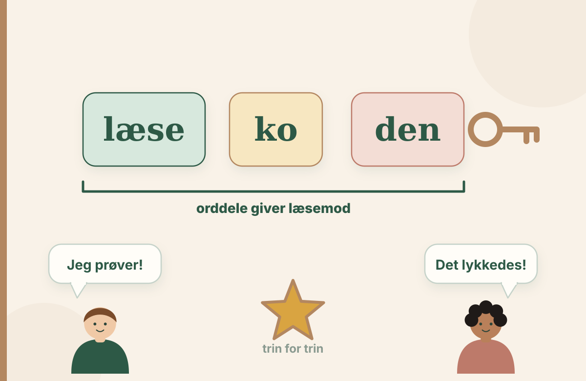

Fortælling til faglig samtale
Læsekoden: Asta og Malik
En fortælling om bogstav-lyd-forbindelser, afkodning og glæden ved at læse.
Åbner bogen …
Indlæser siderne i bogen …

Brug knapperne eller piletasterne til at bladre. Siderne vises direkte i Læsebliks boglæser.
Til den faglige samtale
Hvad viser fortællingen om elevens strategier og deltagelse? Hvilke tegn ville du undersøge nærmere, før du vælger en undervisningsindsats?